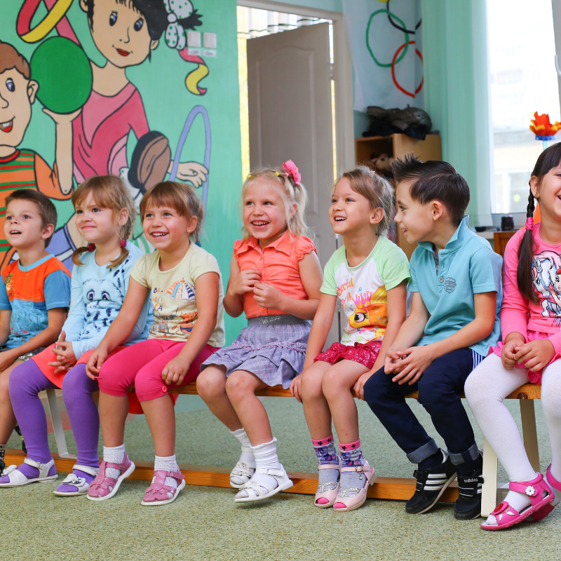

A la hora de trabajar con la infancia es fundamental conocer las etapas del desarrollo en que se encuentran, ya que de esta manera nuestro acompañamiento se vuelve más pertinente y responde a sus necesidades reales y no a suposiciones adultocéntricas.
Cada niño o niña es un mundo por descubrir, ya que cada historia es diferente, cada crianza es distinta, es por esto que debemos cuidar la manera en que nos situamos frente a estas particularidades, reconociendo la responsabilidad que queda en nuestra manos al ser parte de sus procesos de desarrollo, ya sea desde el yoga u cualquier otra disciplina.
El conocer las características fundamentales de las etapas del desarrollo de la infancia, nos despeja el camino, nos permite profundizar en la comprensión hacia sus necesidades y en cómo articular nuestra acciones para y con ellos/as.
El desarrollo humano es el proceso y todos sus cambios que experimentamos como seres humanos, a nivel físico, mental, emocional y espiritual. Cada proceso es particularmente diferente y contiene una amalgama de herencia y ambiente, fusión que desde la mirada psicológica plantea que hay mucha información transmitida genéticamente pero que esta puede ser modificable según el ambiente en que esta herencia se vea expuesta.
Existen diversas miradas en torno a este proceso de desarrollo pero lo interesante, es visualizar que aparecen similitudes considerables, y que al momento de llevarlo a la práctica es posible de confirmar.
Esta vez comprenderemos a la infancia y sus características desde la antroposofía, la cual se construye como una cosmovisión espiritual del ser, con áreas de aplicación en lo educativo, la medicina, las artes, etc. Dentro de esta cosmovisión, Rudolf Steiner estableció los septenios, una manera de comprender el desarrollo humano desde un estudio biográfico cada siete años.
Esto quiere decir que los tres primeros septenios (De 0 a 7, 7 a 14 y 14 a 21), lo que prima es la consolidación del cuerpo físico y la temática central es el conocer la vida en la cual encarnamos.
Abordaremos los dos primeros septenios, teniendo en cuenta lo que nos convoca, el yoga y la infancia:
Primer Septenio (De 0 a 7 años)
- El niño/a es un ser sensorio-imitativo
- El juego y la exploración son grandes motores.
- Disfrutan de la realidad de manera concreta y no intelectualizada.
- La mirada es hacia adentro. El yo incrementado.
- Atención-concentración más acotada.
- Pensamiento mágico a flor de piel.
- Etapa del Porqué.
- Disfrutan de la repetición.
- Su actividad se focaliza en el afán de hacer y la alegría del crear.
Segundo Septenio (De 7 a 14 años)
- La mirada se vuelca hacia afuera.
- Atención más sostenida.
- Pensamiento más abstracto, donde predomina la razón.
- Aparece sentido de pertenencia.
- Aparecen preguntales tales como: Porqué, Cómo, Cuándo, Dónde?
- Sostienen juegos y diálogos más complejos.
- Manejan las nociones de tiempo, por lo que aparece la continuidad en el hacer.
- Imitan pero de manera selectiva.
- Mayor autonomía e independencia.
- Mayor conciencia corporal y espacial.